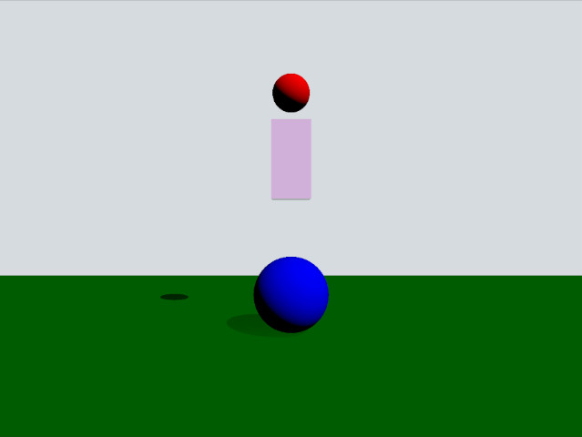

Qt Quick 3D Physics - Impeller Example
Demonstrates using trigger bodies and collision info.

This example demonstrates how to use trigger bodies and collision info. The scene consists of a green static plane, a red dynamic sphere, a pink box trigger and a blue static sphere. When the red sphere overlaps the trigger body it will turn yellow and when it collides with the blue sphere it will be repelled away.
Setup
As usual we need to add our PhysicsWorld:
PhysicsWorld { gravity: Qt.vector3d(0, -490, 0) scene: viewport.scene }
We also add a View3D where we put our scene objects. In this we have some settings for the visual environment:
environment: SceneEnvironment { clearColor: "#d6dbdf" backgroundMode: SceneEnvironment.Color } PerspectiveCamera { position: Qt.vector3d(0, 200, 1000) clipFar: 2000 clipNear: 1 } DirectionalLight { eulerRotation.x: -45 eulerRotation.y: 45 castsShadow: true brightness: 1 shadowFactor: 100 }
Physical objects
We have our regular static plane:
StaticRigidBody { position: Qt.vector3d(0, -100, 0) eulerRotation: Qt.vector3d(-90, 0, 0) collisionShapes: PlaneShape {} Model { source: "#Rectangle" scale: Qt.vector3d(500, 500, 1) materials: PrincipledMaterial { baseColor: "green" } castsShadows: false receivesShadows: true } }
This is how our dynamic sphere is defined:
DynamicRigidBody { id: sphere massMode: DynamicRigidBody.CustomDensity density: 0.00001 position: Qt.vector3d(0, 600, 0) property bool inArea: false sendContactReports: true receiveTriggerReports: true onEnteredTriggerBody: { inArea = true } onExitedTriggerBody: { inArea = false } collisionShapes: SphereShape {} Model { source: "#Sphere" materials: PrincipledMaterial { baseColor: sphere.inArea ? "yellow" : "red" } } }
The property inArea is a custom property we use to keep track of when the sphere is overlapping the box trigger body. This is then used for the baseColor property to make the sphere yellow when it is overlapping the box and red otherwise. Since we want the sphere to partake in contact reporting the property sendContactReports needs to be set to true. Since we also want the sphere to get callbacks when entering and leaving a TriggerBody, the property receiveContactReports is also set to true. We implement the enteredTriggerBody and exitedTriggerBody signal methods on the sphere where we set the inArea property to true or false when entering or leaving the trigger body.
Now let's look at the trigger body:
TriggerBody { position: Qt.vector3d(0, 350, 0) scale: Qt.vector3d(1, 2, 1) collisionShapes: BoxShape { id: boxShape } Model { source: "#Cube" materials: PrincipledMaterial { baseColor: Qt.rgba(1, 0, 1, 0.2) alphaMode: PrincipledMaterial.Blend } } }
The qml type is a TriggerBody which acts like a static body except its collisions are inactive. Instead it will trigger enteredTriggerBody and exitedTriggerBody method calls on the sphere.
Finally, lets look at the impeller:
StaticRigidBody { position: Qt.vector3d(0, 0, 0) scale: Qt.vector3d(2, 2, 2) receiveContactReports: true collisionShapes: SphereShape {} Model { source: "#Sphere" materials: PrincipledMaterial { baseColor: "blue" } } onBodyContact: (body, positions, impulses, normals) => { for (var normal of normals) { let velocity = normal.times(-700) body.setLinearVelocity(velocity) } } }
This is a static body and we set receiveContactReports to true to enable the collision callbacks. The callback bodyContact gets called whenever a collision is reported. In the method we call setLinearVelocity to set the linear velocity in the opposite direction of the collision normal vector to simulate an impeller.
Files: